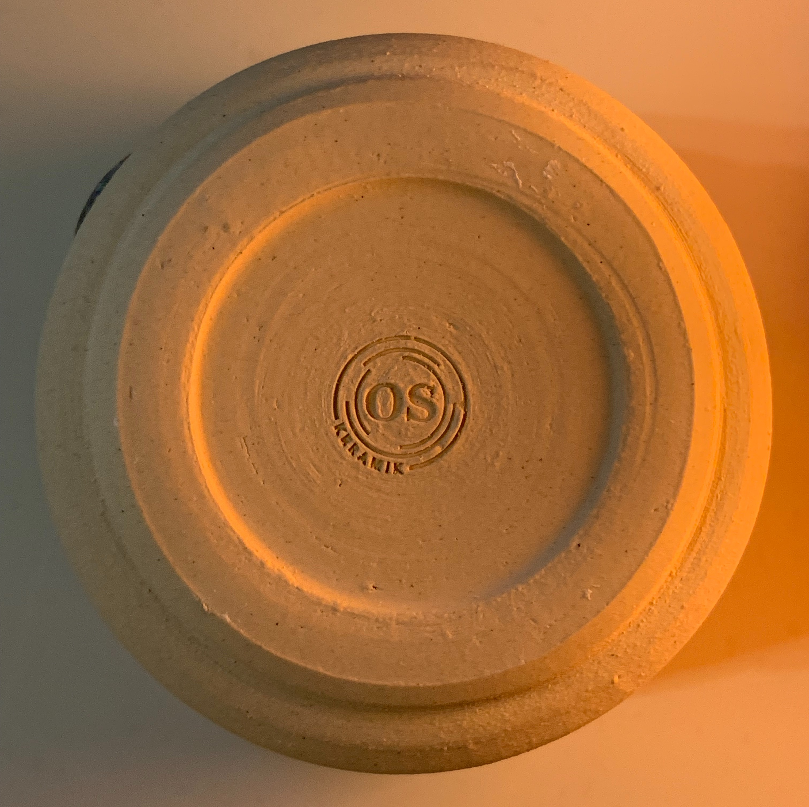
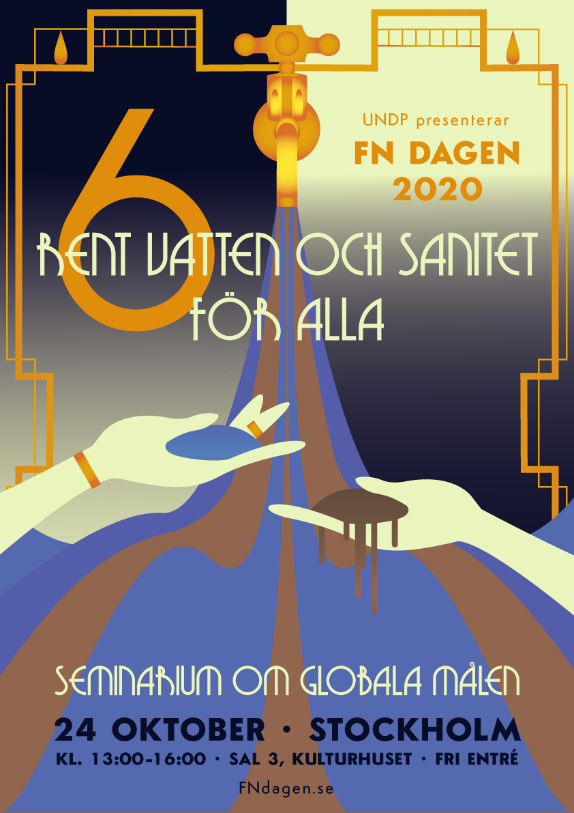
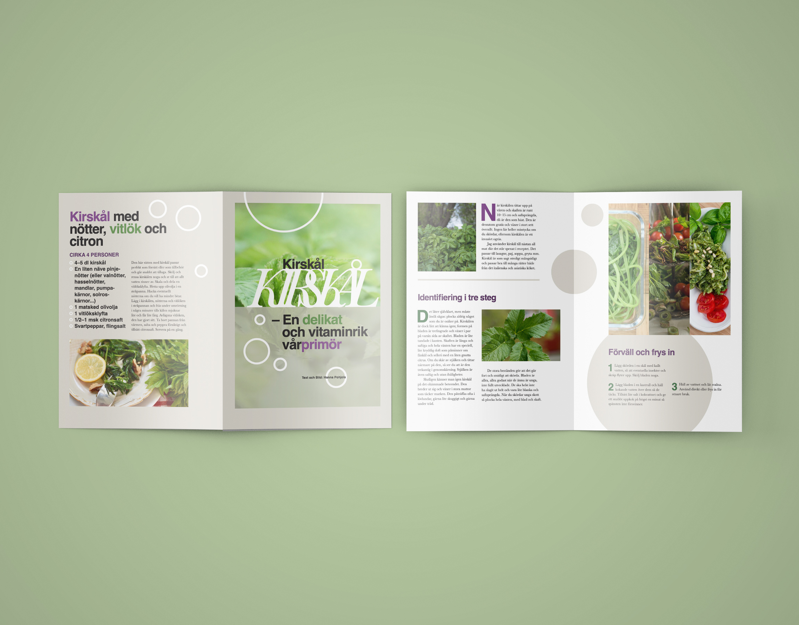
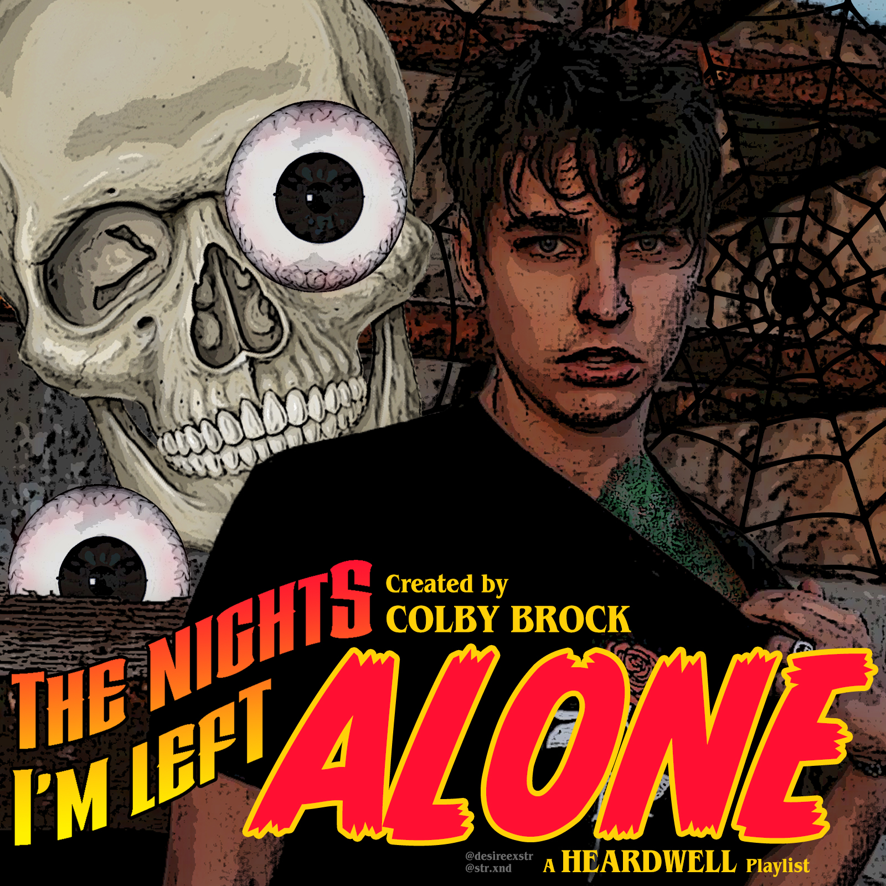
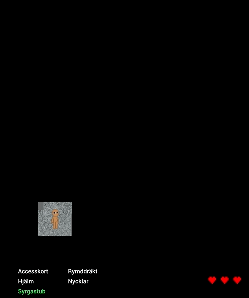
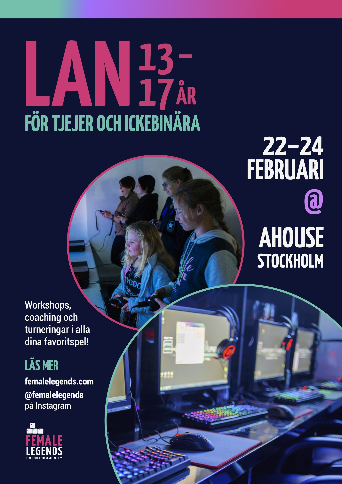
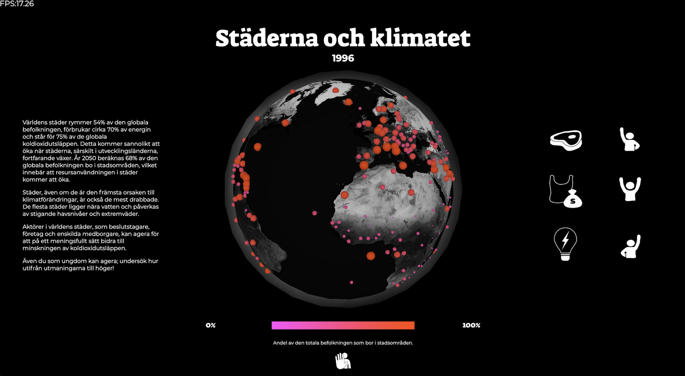

Arkiv
I arkivet samlas mindre projekt från min utbildning och personliga designexperiment.







Alien Maze, ett objektorienterat labyrintspel. Skoluppgift från 2020, skapad med p5.js tillsammans med Ottilia Olsson. Testa själv ">


Med världen i dina händer, en datavisualisering på temat klimat som styrs av rörelser i webbkameran. Skoluppgift från 2020, skapad med p5.js och Techable Machine tillsammans med Ottilia Olsson.">